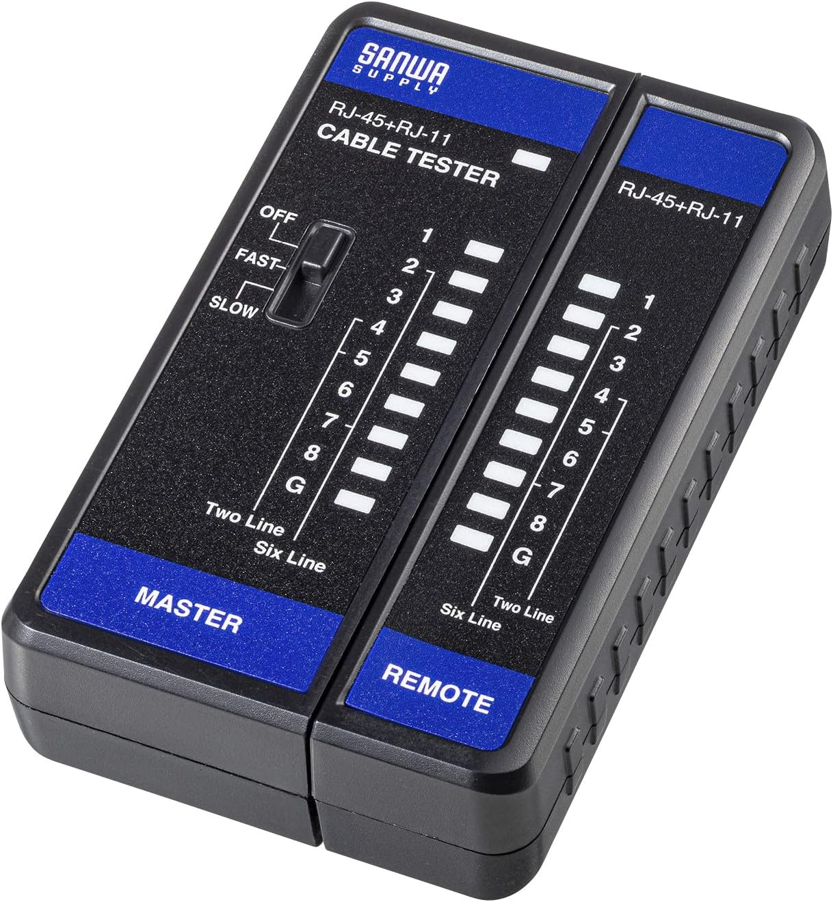

LANチェッカーとは？使い方とできることをわかりやすく解説
LANチェッカーは、LANケーブルがちゃんとつながっているかを確認するための道具です。
かしめたあとに見た目だけで判断せず、導通や結線ミスを確認したい時に使います。
LANかしめは、見た目がそれっぽくできていても、実際には配列ミスや断線があることがあります。
そういう時に、LANチェッカーがあると端末処理が正常かどうかを確認しやすいです。
このページでは、LANチェッカーとは何か、どんなことが確認できるのか、どうやって使うのかを初心者にもわかりやすくまとめています。
先に言うと、LANチェッカーは「かしめたあとに確認する道具」です
LANチェッカーとは、ネットワークケーブルの導通、断線、結線ミス、グランドの有無などを確認するための道具です。
LANテスターと呼ばれることもあります。
かしめ工具でLANプラグを付けただけでは、正しく通信できる状態かどうかまでは見た目で分かりません。
だから、かしめたあとにチェッカーで確認するところまでやると安心です。
高機能なものだと、ケーブル長、ペア配線の整合性、対向の終端探しなどができる物もありますが、まずは導通と結線確認ができればかなり実用的です。
先に結論
LANチェッカーとは？
まずは「何をする道具なのか」をざっくり押さえておくと分かりやすいです
まずここだけ分かればOK
LANチェッカーは、LANケーブルがちゃんと順番どおりにつながっているかを確認する道具です。
かしめたあとに「見た目では分からないミス」をチェックするために使います。
導通、断線、結線ミスを確認して、配線が正しくつながっているかを見ます。
LANチェッカーとは、ネットワークケーブルの導通、断線、結線ミスやグランドの有無を確認するものです。
LANテスターと呼ばれることもあります。
もっと分かりやすく言うと、LANケーブルの1番から8番までがちゃんとつながっているか、順番がズレていないかを見る道具です。
LANプラグをかしめただけでは、見た目がきれいでも中の配線が間違っていることがあります。
現場では、LANかしめ後の確認でまず使います。
配線後に「ちゃんと通ってるか」を見るだけでも、初期トラブルはかなり減らせます。
かしめて終わりに見えますが、この確認をやるかどうかでトラブルの出方がかなり変わります。
また、通信不良が出たときの原因切り分けにも便利です。
まずチェッカーで配線ミスや断線がないかを見て、問題なければ機器側や設定側を疑う、という流れにすると迷いにくいです。
見た目では分からないミスを拾えるのがLANチェッカーです。
できることは、配線チェックと結線ミスの確認です。
逆に、通信速度や実際の通信品質までは分かりません。
なのでLANチェッカーは「線のつながりを確認する道具」と覚えると使いどころがはっきりします。
使い方はシンプルで、ケーブルの両端に親機と子機をつないでチェックします。
分離できるタイプが多いので、離れた場所でも確認しやすく、既設配線の確認にも便利です。
LEDが1→8の順に光ればOK、順番がズレていれば結線ミスのサインです。
LANチェッカーで主に見ること
- 導通しているか
- どこかで断線していないか
- 1番から8番までの順番が合っているか
- 結線ミスや入れ違いがないか
LANチェッカーの使い方
親機と子機に分かれるタイプを例にするとイメージしやすいです
使い方はそこまで難しくありません
親機の電源を入れて、両端にケーブルをつなぎ、番号のランプが順番どおり点くかを見るだけです。
順番に点灯すれば、ストレート結線でつながっていると判断しやすいです。
LANチェッカーの使い方を、親機と子機に分離できるタイプを例にして説明します。
まず親機側のスイッチを入れると、パイロットランプが点滅してテストできる状態になります。
その状態でLANケーブルを親機と子機にそれぞれ接続します。
すると、親機・子機の両方で番号が書かれたLEDが順番に点灯していきます。
1、2、3、4…という感じで順番どおり点灯すれば、ストレート結線で正しくつながっていると見やすいです。
逆に、途中が飛ぶ、順番が入れ替わる、片方だけ点かないといった時は、断線や結線ミスの可能性があります。
使い方の流れ
- 親機の電源を入れる
- 親機と子機にLANケーブルを接続する
- LEDが順番どおり点灯するか見る
- 飛びや入れ違いがないか確認する
参考動画で動き方を見る
実際にLEDの流れや親機・子機の使い方を見ると、初めてでもかなりイメージしやすいです。
「どう光れば正常なのか」を先に見ておくと分かりやすいです。
※掲載している動画は参考用です。記事内で説明しているチェッカーと細かい仕様が違っていても、親機・子機で確認する流れやLEDの見方のイメージ作りにはかなり役立ちます。
シンプルで安価なチェッカーなら『サンワサプライ LAN-TST7』

あとで写真を入れる前提の枠です。画像ファイル名は lan-tst7.jpg にしています
この機種のいいところ
シンプルで安価なので、まず基本的な確認をしたい人にはかなり分かりやすいです。
複雑すぎないので、最初の1台として使いやすいタイプです。
サンワサプライ(Sanwa Supply) LANケーブルテスター LAN-TST7 は、シンプルで安価なチェッカーです。
とりあえず導通や結線状態を見たい時に使いやすいです。
スイッチを入れるとLEDが順番に光ります。
速さが2つ選べるので、見やすい方で確認できます。
正常時と異常時の光り方を把握しておくとかなり分かりやすいです。
ストレートに結線されていれば、親機と子機の同じ番号が光ります。
結線されていなければLEDが光りません。
見方のポイント
- 親機と子機の同じ番号が順番に光れば正常と見やすい
- LEDが光らない所があれば断線や未結線を疑う
- 番号がズレるなら結線ミスの可能性がある
- 速さを変えて見やすい方で確認すると分かりやすい
自分が使っているチェッカーは『HIOKI LANケーブルハイテスタ 3665』

これもあとで写真を入れる前提の枠です。画像ファイル名は hioki-3665.jpg にしています
記事内にも画像がある方が分かりやすいです
HIOKI 3665 も画像が入っていた方が、「これを使って確認しているんだな」と読者に伝わりやすいです。
安価なチェッカーとの違いもイメージしやすくなります。
圧着工具ページのLANかしめ部分でも、自分はチェッカーに『HIOKI LANケーブルハイテスタ 3665』を使って確認している流れになっています。
なので、この説明記事にも HIOKI 3665 を入れておくと、ページ同士のつながりがかなり自然になります。
「実際に使っている物」と「安価で分かりやすい物」の両方を見せられるので、読者にも伝わりやすいです。
まずは安価なチェッカーを知りたい人向けに LAN-TST7 を出して、 実際に使っている機種として HIOKI 3665 を補足で見せる形はかなり相性がいいです。
▶ 『HIOKI 3665』の価格をAmazonでチェックする 実際に使っているLANチェッカーLANチェッカーで分かること・分からないこと
ここを分けておくと、道具の役割を勘違いしにくいです
大事なポイント
簡易的なLANチェッカーは「端末処理が正常そうか」を確認する道具です。
実際に通信できるか、どのくらい速いかまでは分からないことが多いです。
簡易的なLANチェッカーは、導通確認や結線確認にはかなり便利です。
ただし、実際に通信できるかどうか、どれくらいのスピードが出るかまでテストできるとは限りません。
つまり、LANチェッカーは「かしめた端末処理が正常にできていそうか」を見る道具です。
通信品質そのものを保証する道具ではないので、その点は分けて考えた方が分かりやすいです。
高機能なタイプだとできること
製品によっては、ケーブル長、ペア配線の整合性、対向のケーブル終端探しなどができるものもあります。
既設線が大量にある現場や、パッチパネルまわりで配線の識別をしたい時はかなり便利です。
LANチェッカーで確認できること
ざっくり分けると、下のようなイメージです。
| 確認できること | 意味 | 補足 |
|---|---|---|
| 導通確認 | ちゃんとつながっているかを見る | まず一番基本になる確認です |
| 断線確認 | 途中で切れていないかを見る | 番号が飛ぶ時は要確認です |
| 結線ミス確認 | 順番の入れ違いやミスを見る | 見た目だけでは分からないことがあります |
| グランドの有無 | 対応機種ならシールド関連も確認できる | 製品によって確認項目は違います |
| 通信速度の確認 | 基本的には簡易チェッカーでは難しい | 別の測定や上位機種が必要です |
LANかしめ工具だけではダメ？
結論から言うと、かしめ工具だけよりチェッカーもあった方が安心です
ここが大事
かしめ工具でプラグを付けることと、正しく結線できていることは別です。
だから、LANかしめ工具とLANチェッカーはセットで考える方が失敗しにくいです。
LANかしめは、きれいに付いたように見えても、実際には配列ミスや芯線の入り不足があることがあります。
そういう時、見た目だけだと気付きにくいです。
圧着工具ページでも、LANかしめは工具だけで終わりではなく、チェッカーで確認するところまでやる方が安心という流れになっています。
LANを触るなら、かしめ工具だけでなく、確認用としてチェッカーも持っておくと安心感がかなり違います。
▶ 圧着工具の記事を見る LANかしめ工具の紹介ページはこちらLAN施工は「かしめる」だけでなく「確認する」までが安心です
LANチェッカーは、見た目では分からない導通ミスや結線ミスを確認するための道具です。
まずはシンプルなチェッカーでも十分役立ちますし、慣れてきたら使っている機種を基準に選んでもOKです。
初心者でも、まずは「順番どおりにつながっているか」を見るだけでかなり安心感が変わります。
次に合わせて見たい工具


他の工具もまとめてチェック
このページ以外にも、現場で使っている工具や使い方記事を用途別にまとめています。
まとめて見たい方はこちら。
※当サイトはAmazonアソシエイト・プログラムに参加しており、適格販売により収入を得ています。